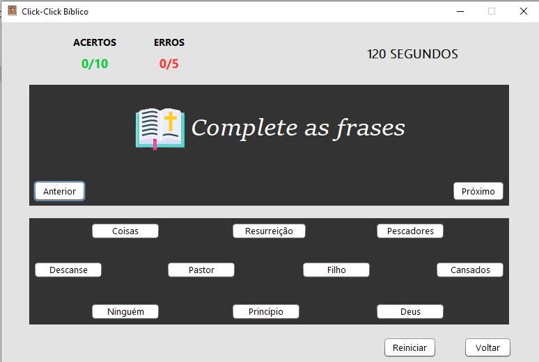

SOBRE O JOGO
O jogo "click, click" foi preparado para melhorar seus conhecimentos bíblicos de forma descontraída e desafiante. O objetivo do jogo é completar os versículos apresentados com as palavras que estiverem faltando. Isso deverá ser feito antes que o tempo acabe.
COMO JOGAR?
1- Você deverá completar os versículos com as palavras que estiverem faltando.2- Você só pode errar 5 vezes. Passando disso, você vai perder o jogo.
3- O jogo deve ser completado no tempo estimado, senão, o tempo vai acabar e aparecerá a seguinte mensagem: " DEMOROU MUITO PARA CONCLUIR O JOGO !!".

FUNÇÃO DOS BOTÕES:

Voltar: O botão vai fazer fazer você voltar a tela inicial